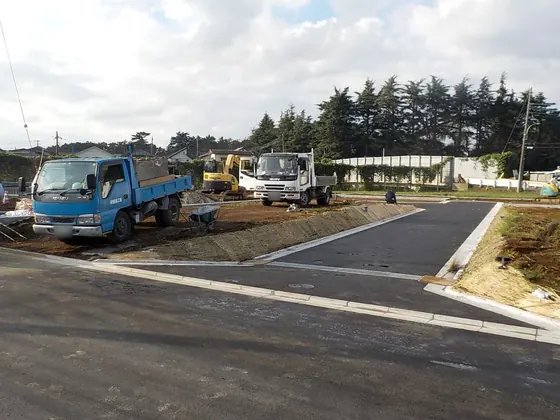
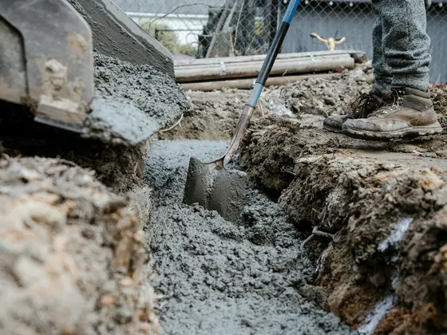

Civil Engineering
綾瀬市の土木・舗装・外構・解体足もとから、まちをつくる。
造成・舗装・外構・解体。暮らしの土台になる地面の工事を、綾瀬市を中心に県央エリアでお受けしています。
- License神奈川県知事許可 第068002号
- Area綾瀬市を中心に県央エリア
- Works造成・舗装・外構・解体
Civil Works｜土木
写真はイメージです

01Service
土木・舗装・外構・解体を、まとめてお受けします。
-
-

-

-
-

-
※ 写真はイメージです。横にスワイプすると、ほかの工事も見られます。
02Recruit
一緒に、まちの土台をつくりませんか。
土木作業のスタッフを募集しています。道路や駐車場、家が建つ前の土地。毎日だれかが通る場所をつくる仕事です。
- 01未経験から始められます
先輩が現場で、一つずつ教えます。
- 02資格は会社のお金で
重機などの免許・資格を、会社負担で取れます。
- 03車で通えます
朝は会社に集まって、みんなで現場へ向かいます。
※ 2023年の募集の内容をもとにしています。確認中
採用情報を見る- 所在地
- 神奈川県綾瀬市寺尾西3丁目9番4号
- 建設業許可
- 神奈川県知事許可 第068002号
- 主な地域
- 綾瀬市を中心に、県央エリア確認中
Contact
工事のご相談・お見積りは、お気軽に。
受付時間確認中 お電話のときは「ホームページを見た」とお伝えください。